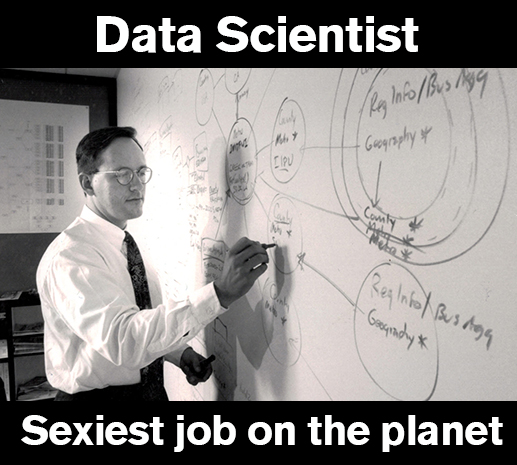
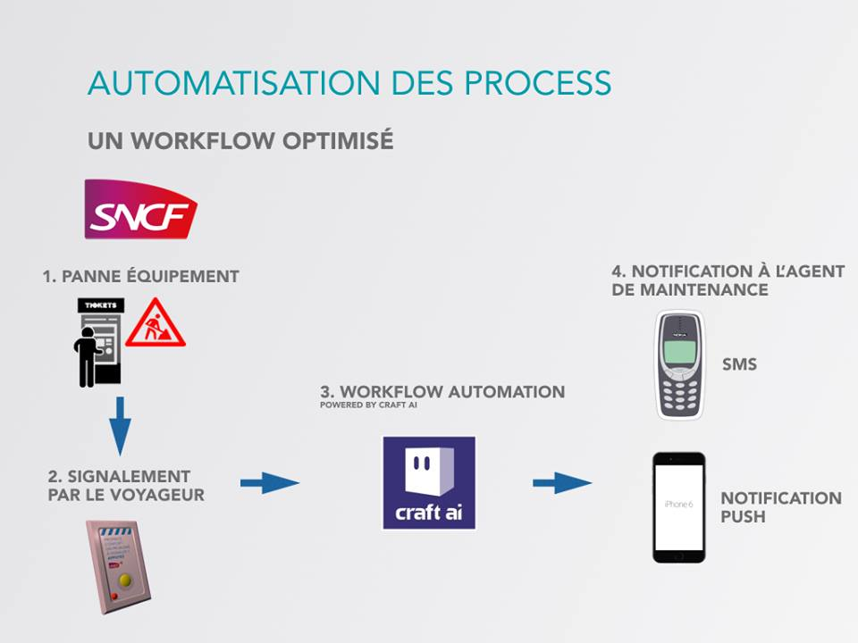
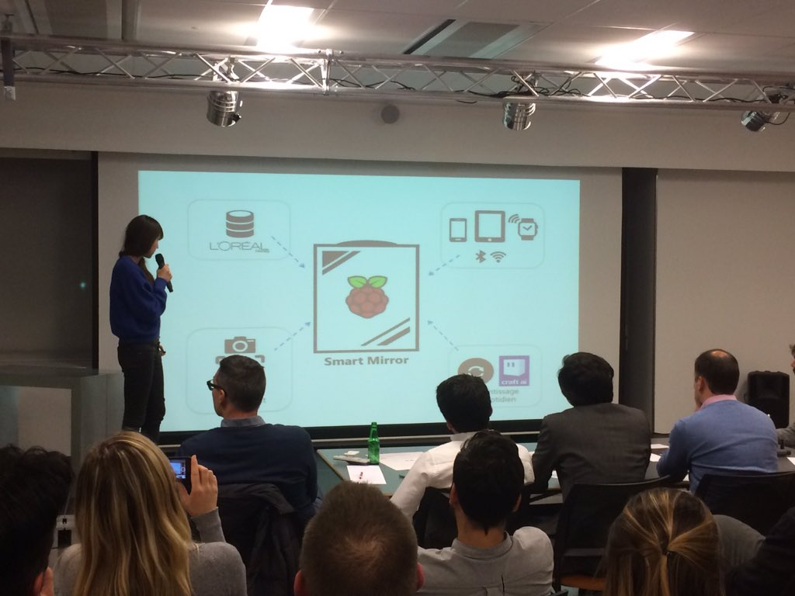

Paris AI, Robotics & IoT Meetup #2
Clodéric Mars
03/12/2015
There's a problem with IoT
(well, there's one I'm gonna talk about)Smart Objects services now...
Dashboards
Notifications
Are these the best we can do?
Smart Services are...
Smart needs
Awareness
Learning
AI!

AI?
But!
AI is pretty hard to...
implement
control
explain
Maybe, there's another way to do AI!
But first, some background
(let's see how video games can help with our IoT problem)Game AI
Autonomous characters
Entertainment | Art | Pedagogy | Simulation
Lessons Learned
Intelligent = credible as intelligent
Perception | Usefulness | != Algorithm
AI = Content production
Control | Predictability | Explainability
Developers != AI experts
Combinatorial complexity | Statefulness
Asynchronicity
Enable developers to create AI that is
doing what they want
aware of their users' context
learning from their users
Directed Adaptable Agents
10 experts working on it since 03/2015
Released on 10/2015
Hackathon IoT
27- 29 Nov 2015


AI?
Make sense of sensors
Model physical systems
Push relevant notifications
Personalize assistants
SNCF Now
Signal equipment issues with a push of a button
Smart Mirror
A beauty assistant in your bathroom
Take Away
Fun!
Commit
Manage Expectations
object-centric, no time for services
marketer/developer ratio
Good IoT services are Aware & Learn
Usable tools are Whiteboxes

Sign up now!

The content of this presentation is published under the Attribution-NonCommercial 4.0 International